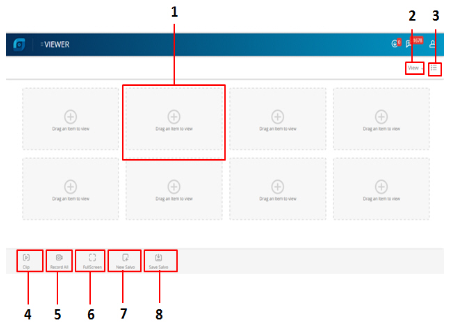

La figura siguiente ilustra la pestaña Visor.
En pantalla se visualizan los componentes siguientes.
| N.º | Campo | Descripción |
| 1 | Visualizar clip | Muestra clips en varias cuadrículas según la selección de cuadrícula. Se puede seleccionar uno o varios clips para capturar una instantánea, grabar o ver en pantalla completa. |
| 2 | Ver | Muestra la opción para seleccionar el aspecto de la estructura de cuadrícula en la pestaña del visor. |
| 3 | Opción de mostrar/ocultar | Aparecen las tres opciones siguientes:<> a. Listas universales: Muestra todos los clientes, sitios, grupos y dispositivos.<> b. Imágenes: Muestra todas las vistas de imágenes específicas de la cuenta de usuario que inició la sesión.<> c. Alarmas: Muestra todas las alarmas activas específicas de la cuenta de usuario que inició la sesión. |
| 4 | Clip | Muestra la opción para capturar una instantánea de un fotograma de vídeo en directo o grabado y utilizarla como imagen. |
| 5 | Grabar todo | Muestra la opción para grabar un vídeo de las cámaras conectadas a MPC. |
| 6 | Pantalla completa | Muestra la opción para ver una pantalla completa de toda la visualización del clip. |
| 7 | Nuevas imágenes | Muestra la opción para crear imágenes nuevas. El diseño de imágenes es una disposición de paneles que muestra vídeo. Cuando se selecciona la pestaña Visor se puede ver el diseño de imágenes. |
| 8 | Guardar imágenes | Seleccione una vista en directo o un diseño de imágenes que esté personalizada según sus preferencias para crear una vista de imágenes. Se pueden seleccionar las cámaras y secuencias de escaneado de las que quiera ver frecuentemente vídeo y guardar el diseño de imágenes como vista de imágenes. |
Anterior Cerrar sesión
Siguiente Buscar y reproducir